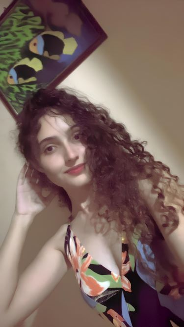
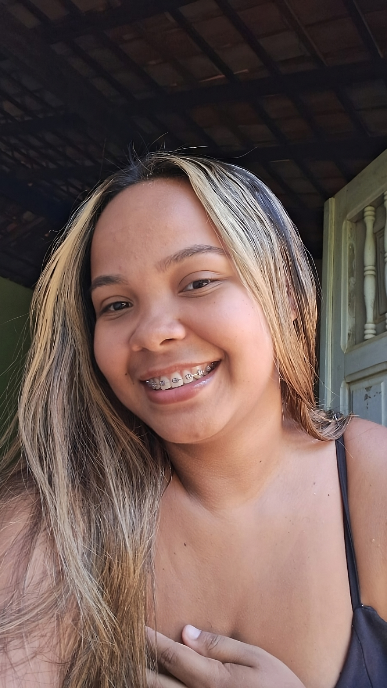

REDAÇÃO DESCOMPLICADA
"A redação é a arte de transformar ideias em palavras que inspiram, informam e transformam."
Aqui, você aprende redação de forma clara, objetiva e eficiente.
Aqui, você aprende redação de forma clara, objetiva e eficiente.
Gostaria de agradecer imensamente à professora Kaylla pela atenção e ajuda durante o curso de redação. Sua orientação foi fundamental para a minha evolução, contribuindo significativamente para a melhoria de cada uma das minhas redações. As aulas foram extremamente explicativas, desde o processo de como construir uma redação do zero até o detalhamento de como cada competência é relevante. A minha experiência ao longo dessa trajetória no curso foi muito enriquecedora e certamente fez toda a diferença na minha aprovação.

O cursinho Study Red me proporcionou uma experiência muito boa em relação à redação, algo que foi essencial para a minha nota. A metodologia utilizada pela Kaylla fez com que eu aprendesse muito rápido o processo de construção de uma redação; ela ia me explicando os tópicos e mostrando os slides, isso contribuiu muito para o meu aprendizado, pois eu visualizava o conteúdo e ao mesmo tempo recebia as explicações, assim absorvia mais rápido e já ia tirando as minhas dúvidas. Além disso, a Kaylla sempre estava disponível para sanar qualquer dúvida que eu tivesse em relação à redação, era algo além do cursinho. Na época eu estava no segundo ano do ensino médio e era o meu primeiro enem, e ter alcançado 900 pontos na redação do meu primeiro enem é motivo de muita alegria e gratidão à Kaylla. Study Red recomendadíssimo! ❤
Hoje celebramos duas aprovações, ebaaaaaaaa... Química no Sisu, e psicologia no Prouni, e é com imensa gratidão que eu venho agradecer o Study Red, que me proporcionou uma experiência incrível, que foi essencial para estás aprovações. Kaylla, você demonstrou grandes qualidades no seu curso, e também como pessoa. Seus ensinamentos foram primordiais na minha evolução, com aulas maravilhosas e sempre a minha disposição, certamente essa trajetória no curso foi muito favorecedora. Estou muito feliz pela minha determinação, e obrigada pelo seu esforço e comprometimento, valeu a pena e continuará valendo no futuro. Bjos